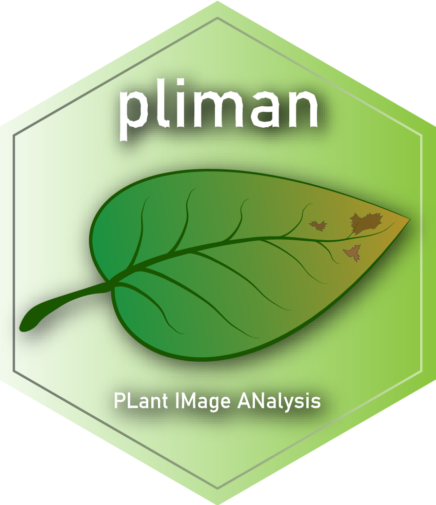

About
1 About
In this website are available the codes used to reproduce the analysis and results of the paper describing the pliman R package
 pliman (plant image analysis) is designed to analyze plant images, especially related to leaf and grains. The package will help you to:
- Measure leaf area;
- Measure disease severity;
- Count the number of lesions;
- Obtain the shape of lesions;
- Produce Standard Area Diagrams;
- Count objects in an image;
- Get object features (area, perimeter, radius, circularity, eccentricity, solidity);
- Get the RGB values for each object in an image;
- Get the object coordinates;
- Get the object contours;
- Get convex hulls;
- Isolate objects;
- Plot object measures.
pliman also provides useful functions for operation, transformation, and segmentation of images. Please, visit the Examples page in pliman website for a detailed documentation of each function.
2 How to reproduce?
- Download data
To download the files and code needed for reproducing the results, first clone the project with
git clone https://github.com/TiagoOlivoto/paper_pliman.gitAn alternative way is by downloading the ZIP file containing the scripts and all needed images ()
- Reproducing
- Open the
code.Rmdfile in RStudio. - Optionally change functions and arguments.
- Knit the document to see the results.
- Open the